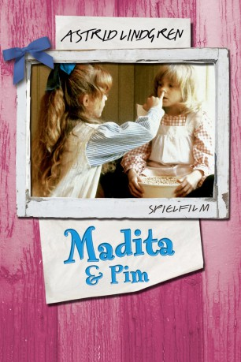

#11734 Madita und Pim
 
 IMDB-Wertung: 6.4 / 10
IMDB-Wertung: 6.4 / 10  Metascore: 0
Metascore: 0 
Die achtjährige Madita wächst um 1900 in einer schwedischen Kleinstadt in gutbürgerlichem Hause auf und bringt ihre Mitmenschen mit Streichen zur Verzweiflung. Verfilmung nach einem Kinderbuch Astrid Lindgrens.
Jahr: 1980
Dauer: 82 Minuten
FSK: 0
Land: Schweden Studio: SFTonspuren:
Untertitel:
Auflösung: 720p (1280x720) Größe: 2140 MB
Genre: Drama, Komödie, Familie
Regisseur: Göran Graffman
Drehbuch: Astrid Lindgren, Astrid Lindgren
Soundtrack: Bengt Hallberg
Darsteller:
- Liv Alsterlund als Lisabet
- Monica Nordquist als Mamma
- Björn Granath als Pappa
- Lis Nilheim als Alva
 Allan Edwall als Herr Nilsson
Allan Edwall als Herr Nilsson- Birgitta Andersson als Fru Nilsson
- Björn Gustafson als Doktor Berglund
- Ted Åström als Sotaren
- Sif Ruud als Linus-Ida
- Fillie Lyckow als Skolfröken
- Jonna Liljendahl als Madicken
- Sebastian Håkansson als Abbe
- Kerstin Hansson als Mia
- Cecilia Orlando-Willberg als Mattis
Datei: X:\Kinder Collections\Astrid Lindgren\Madita und Pim (1980, FSK0, 1280x720).mkv seit 14.09.2019
Festplatte: Kinder-Filme+Trick
 Es gibt insgesamt 26 Filme in der Gruppe 'Kinder Collections\Astrid Lindgren'
Es gibt insgesamt 26 Filme in der Gruppe 'Kinder Collections\Astrid Lindgren'